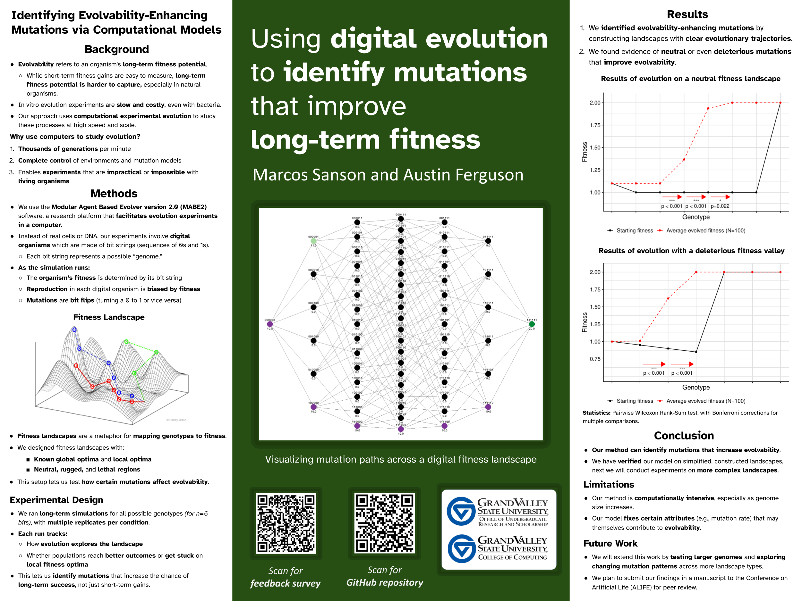
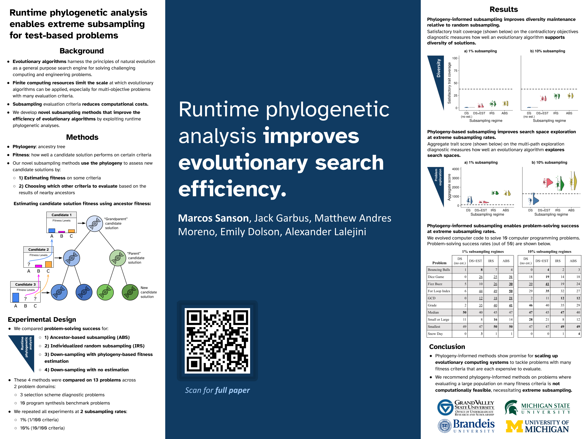
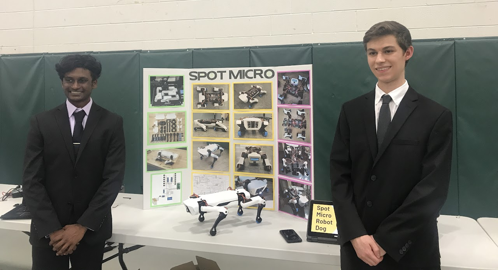

About Me

I am a 4th-year undergraduate computer science student at Grand Valley State University. I am passionate about learning, applying new technologies, and solving complex problems.
My academic and professional journey has taken me across the United States and internationally, including two separate study abroad experiences in Spain.
In addition to pursuing a degree in computer science at Grand Valley State University, I am also an undergraduate researcher studying artificial intelligence (AI), machine learning (ML), and evolutionary computation (EC).
My current research focuses on designing and optimizing computational models, evolutionary algorithms, and machine learning techniques to solve complex problems.
Recent Posts
Education
Grand Valley State University
Allendale, Michigan, United States
Bachelor of Science in Computer Science, Minors in Mathematics and Cybersecurity
(expected May 2026)
GPA: 3.913/4.000
Honors and Awards:
- Barry Goldwater Scholar (2025)
- Ronald E. McNair Post-Baccalaureate Achievement Program Scholar
- P. Douglas Kindschi Undergraduate Research Fellowship in the Sciences (Winter 2024, Winter 2025)
- Dean's List (Fall 2022 – Winter 2025)
- Hispanic Scholarship Fund Scholar (2023, 2024, 2025)
Relevant Coursework:
Computer Science:
- Computer Science I (CIS 162)
- Computer Science II (CIS 163)
- System-Level Programming & Utilities (CIS 241)
- Introduction to Cybersecurity (CIS 258)
- Data Structures and Algorithms (CIS 263)
- Professional Responsibilities (CIS 290)
- Structure of Programming Languages (CIS 343)
- Introduction to Software Engineering (CIS 350)
- Computer Organization (CIS 351)
- Database (CIS 353)
- Information Assurance (CIS 358)
- Applied Machine Learning (CIS 378)
- Algorithms Engineering (CIS 380)
- Web Analytics (CIS 380)
- Data Communications (CIS 457)
- Internship (CIS 490)
Mathematics:
- Calculus I (MTH 201)
- Calculus II (MTH 202)
- Linear Algebra I (MTH 204)
- Discrete Structures: Computer Science 1 (MTH 225)
- Discrete Structures: Computer Science 2 (MTH 325)
Science & Interdisciplinary:
- Exploring the Earth (GEO 111)
- General Biology I (BIO 120)
- Critical Interpretation (COM 202)
- Creativity and Problem-Solving (INT 310)
- Intercultural Communication & Service Learning – Spain Study Abroad (ITC 100)
Universidad Carlos III de Madrid (UC3M)
Madrid, Spain
Study Abroad Program (September 2024 – December 2024)
Universidad Carlos III de Madrid (UC3M) is a prestigious Spanish public university recognized for its excellence in research, teaching, and innovation.
I was admitted to the School of Engineering through a semester-long exchange program.
Honors: Recognized with Notable (Very Good) academic distinction
Relevant Coursework:
- Machine Learning in Healthcare (10/10 – Excellent)
- Creativity and Innovation (9.7/10 – Excellent)
- Web Analytics (8.5/10 – Very Good)
- Computer Networks
Experience
May 2025 – Present
Air Force Research Laboratory Scholars Program – Kirtland Air Force Base, Albuquerque, New Mexico, United States
- Selected for the nationally competitive AFRL Scholars Program to develop reinforcement learning models for autonomous spacecraft control
- Contributing to the project Artificial Intelligence Spacecraft Control for Contested Space Applications Using Reinforcement Learning
October 2022 – Present
Grand Valley State University – Allendale, Michigan, United States
- Collaborate with computer science professors in artificial intelligence (AI), machine learning (ML), and evolutionary computation (EC) research
- Develop and optimize evolutionary algorithms, utilizing experimental design, high-performance computing, statistical software, and ML frameworks (e.g., PyTorch) to solve complex engineering and computing problems
- Co-authored peer-reviewed paper and presented work at the 2024 Genetic and Evolutionary Computation Conference (GECCO-2024)
-
Awarded two P. Douglas Kindschi Undergraduate Research Fellowships in the Sciences for the following projects:
- “Exploiting Phylogenetic Analysis to Improve Evolutionary Search Algorithms” (Winter 2024)
- “Identifying Evolvability-Enhancing Mutations via Computational Models” (Winter 2025)
May 2024 – August 2024
Gentex Corporation – Zeeland, Michigan, United States
- Developed embedded software in C and Ruby for new Gentex products and technology
- Spearheaded project to integrate new microcontrollers in active light-sensing and auto-dimming vehicle mirrors, improving real-time processing, increasing driver safety, and resulting in significant annual cost savings
- Deployed software to hardware, reviewed code, wrote design documentation, and completed unit testing
- Collaborated with members from the software testing, project management, requirements, and finance teams
January 2023 – April 2025
GVSU Information Technology – Allendale, Michigan, United States
- Provide support for over 3,000 of the university's staff and faculty members
- Set up new computing equipment and fix a variety of technological issues, including hardware and software problems
- Manage and schedule plans in a team environment to resolve multiple incidents and tasks
- Developed a Python-based meteorological application during my Intercultural Communication & Service Learning Spain Study Abroad program
- Automated the generation of weather databases and visualizations to support environmental sustainability projects
- Improved data processing speed by over 200,000% and packaged the tool as a standalone executable
- Built both a Command Line Interface (CLI) and Graphical User Interface (GUI), with multilingual support (English, Spanish, Galician)
- Worked both in-person in Spain and remotely in the United States
Projects
Here are some of my academic and personal projects in research, software, robotics, and machine learning. Click the links for more details or for their source code.
Below are demonstrations of the Spot Micro Agile Robot Do project, showing remote control movement and testing. See full project details in Project 7 below or visit our Spot Micro Robot Project Website.Spot Micro - Remote Control Movement Demonstration
Spot Micro - Robot Operating Mode (ROM) Testing
-
1. Identifying Evolvability-Enhancing Mutations via Computational Models
October 2024 – May 2025

Research poster presented at GVSU's 2025 Student Scholars Day
- Overview: Traditional biological evolution experiments take months, years, or even decades to complete, but computational models allow us to study thousands of generations per minute. With this capability, I researched how certain mutations improve evolvability using NK landscapes, a mathematical model of fitness landscapes.
- Key Activities:
- Designed computational experiments to analyze fitness data
- Tested various evolvability metrics to quantify adaptability
- Ran large-scale simulations on Grand Valley State University's high-performance computing cluster
- Compared fitness landscapes with and without specific mutations to identify trends in evolvability
- Impact: Identified patterns that reveal how specific mutations enhance a population's ability to adapt over time, contributing to a deeper understanding of evolvability in biological and artificial systems
- Mentor: Dr. Austin Ferguson, Assistant Professor, College of Computing, Grand Valley State University
- GitHub Repository: https://github.com/FergusonAJ/quantifying_evolvability
- Acknowledgments: Supported by the Kindschi Undergraduate Research Fellowship (Winter 2025)
-
2. Automatic Atrium Segmentation via Machine Learning
September 2024 – December 2024

Research poster summarizing the final results of the atrial segmentation project. View full version on GitHub.
- Overview: Traditional manual segmentation of atrial structures (regions of the heart) in medical imaging is time-consuming and varies between observers. Using machine learning, we developed a model for automatic 3D segmentation of the atrium to improve accuracy and efficiency in cardiac image analysis.
- Key Activities:
- Preprocessed 3D medical imaging data to ensure high-quality inputs
- Built data pipelines to automate and streamline processing
- Optimized mesh alignment using neural networks to improve segmentation accuracy
- Impact: Improved the speed and precision of atrial segmentation, reducing manual effort and enhancing diagnosis and treatment planning in cardiology
- Mentors:
- Dr. Gonzalo Ricardo Ríos Muñoz, Assistant Professor, Bioengineering Department, Universidad Carlos III de Madrid (UC3M)
- Dr. Pablo Martínez Olmos, Associate Professor, Signal Theory and Communications Department, UC3M
- Dr. Antonio Artés Rodríguez, Professor, Signal Theory and Communications Department, UC3M
- GitHub Repository: https://github.com/officialconfuzius/cardiologyml
-
3. Phylogenetic Analysis for Evolutionary Search Algorithms
September 2023 – July 2024

Poster presented at the 2024 Genetic and Evolutionary Computation Conference (GECCO)
- Overview: I collaborated with Dr. Alexander Lalejini to enhance evolutionary search algorithms using phylogenetic analysis. We improved optimized problem-solving by integrating evolutionary biology concepts into computational methods.
- Key Activities:
- Designed and executed experiments on a high-performance computing cluster
- Developed novel subsampling methods for optimization problems
- Analyzed experimental data to assess algorithm performance improvements
- Co-authored a peer-reviewed paper and presented our work at the 2024 Genetic and Evolutionary Computation Conference
- Impact: Our work demonstrated that incorporating phylogenetic analysis into evolutionary search algorithms can significantly enhance their efficiency and effectiveness in solving complex optimization problems.
- Mentor: Dr. Alexander Lalejini, Assistant Professor, College of Computing, Grand Valley State University
- Publication: Runtime phylogenetic analysis enables extreme subsampling for test-based problems
- GitHub Repository: https://github.com/amlalejini/phylogeny-informed-subsampling
- Acknowledgments: Supported by the Kindschi Undergraduate Research Fellowship (Winter 2024)
-
4. Procedurally-generated 2D Role-playing Game
January 2024 – April 2024

Screenshot from final game build. View on GitHub.
- Overview: In a software engineering course (CIS 350), I collaborated with a team to develop a 2D role-playing game featuring procedurally generated content. Our goal was to enhance replayability and player engagement by ensuring unique gameplay experiences with each session.
- Key Activities:
- Designed core game mechanics, including character progression and combat systems
- Implemented procedural content generation algorithms to create dynamic environments and quests
- Conducted playtesting sessions to gather feedback and refine gameplay elements
- Impact: Delivered a functional game prototype that demonstrated the potential of procedural generation to enhance replayability in role-playing games.
- GitHub Repository: https://github.com/Marcos-Sanson/Procedural-RPG
-
5. Meteorological Software Application
May 2023 – November 2023

Example GUI from the final application build. View full screenshot on GitHub.
- Overview: During my study abroad experience at Parque Náutico de Castrelo in Spain, I developed a Python-based application to automate the creation of weather databases and real-time data visualization. This project aimed to improve environmental monitoring and support projects like tree planting and erosion management.
- Key Activities:
- Developed data pipelines to automate the processing of multilingual datasets
- Integrated data visualization tools to monitor environmental conditions
- Collaborated with a cross-cultural team to ensure the application's effectiveness
- Impact: Improved weather data processing speeds by over 200,000%, significantly increasing the efficiency of environmental and meteorological monitoring.
- GitHub Repository: https://github.com/Marcos-Sanson/MeteoGalicia-Application
-
6. Integrated Machine Learning for Robot Control
October 2022 – September 2023

Dr. Jared Moore presenting on genetic algorithms and evolutionary robotics during the GVSU Computing Seminar Series
- Overview: I collaborated with Dr. Jared Moore at Grand Valley State University to integrate machine learning and evolutionary algorithms for controlling a digital quadruped robot. Our goal was to enhance the robot's gait and control efficiency.
- Key Activities:
- Designed experiments and analyzed data to optimize algorithms
- Pretrained neural networks using supervised learning before applying neuroevolution techniques
- Refined hyperparameters to improve algorithmic performance
- Developed tools for experiment execution and data analysis, ensuring reproducibility and integrity of results using frameworks like PyTorch
- Impact: Improved the efficiency and adaptability of quadruped robot control systems, contributing to advancements in evolutionary robotics.
- Mentor: Dr. Jared Moore, Associate Dean of Undergraduate Studies & Outreach, College of Computing, Grand Valley State University
-
7. Spot Micro Agile Robot Dog
October 2021 – May 2022

My project partner, Ronit Nagarapu, and I with the completed Spot Micro Robot Dog
- Overview: Working with another student, I developed a fully operational robot inspired by Boston Dynamics' Spot agile mobile robot. Our goal was to create a cost-effective, functional quadruped robot for both disaster relief and research purposes.
- Key Activities:
- Developed Python-based software enabling remote control via Bluetooth
- Integrated hardware components, including a Raspberry Pi, 3D-printed parts, servo motors, ultrasonic sensors, and an LCD display
- Conducted extensive testing and debugging to ensure functionality across various environments
- Published project documentation and contributed open-source code to the robotics community
- Impact: Created a functional quadruped robot that serves as a platform for further research and development in robotics, and is still active to the present day.
- Project Website: https://sites.google.com/view/senior-tech-project